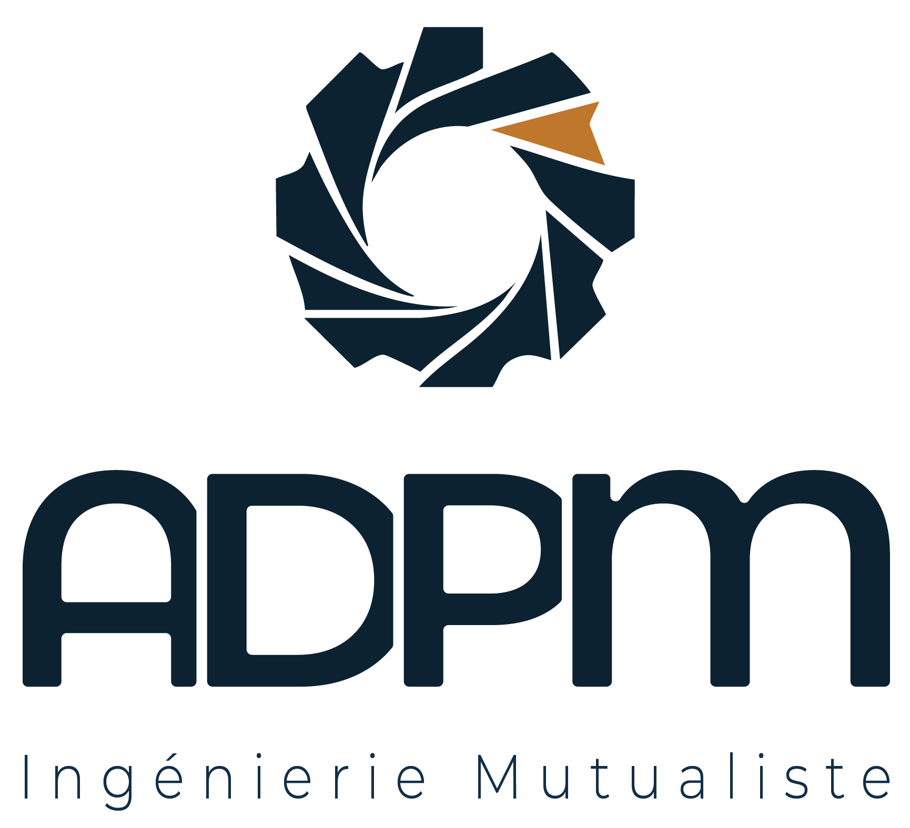
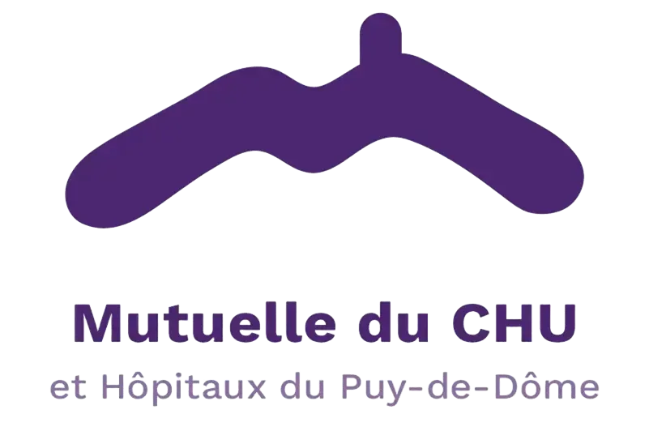

ADPM,
L'appui technique pour mutuelles de proximité
L’ADPM accompagne les mutuelles de proximité avec des services mutualisés en conformité réglementaire, systèmes d’information et solutions numériques, au service de leur efficacité opérationnelle et de leur autonomie de gestion.
Plus de 20 mutuelles et partenaires nous font confiance
À propos
L'expertise au service de la proximité
Depuis 2006, l’ADPM mutualise des expertises techniques et réglementaires pour permettre aux mutuelles de proximité de renforcer leur efficacité opérationnelle et préserver leur autonomie de gestion.

20 ans
Expérience et de longévité
Créée en 2006, l’ADPM s’inscrit dans la durée et accompagne les mutuelles de proximité dans un environnement réglementaire et opérationnel en constante évolution.
20+
Mutuelles accompagnées
Des mutuelles de proximité et partenaires qui s’appuient sur l’ADPM pour structurer et sécuriser leur fonctionnement au quotidien.
4
Domaines d’intervention
Conformité réglementaire, IT et cybersécurité, formation des salariés et administrateurs, accompagnement numérique mutualisé.
100 %
Par et pour les mutuelles
Une association conçue et animée par des acteurs du monde mutualiste, avec une compréhension directe des enjeux, des contraintes et des réalités de terrain.
Nos services
Des services opérationnels pour les mutuelles de proximité
Répondre concrètement aux enjeux réglementaires et opérationnels, au service de votre autonomie de gestion.
Conformité & Sécurité
Protection des données
Sécurisez vos données et votre conformité sans alourdir vos équipes. Un DPO et un RSSI mutualisés vous accompagnent durablement sur le RGPD, la cybersécurité, la gestion des risques et des incidents, avec des coûts maîtrisés et des pratiques éprouvées.
Expertises mobilisées
ConformitéRSSICybersécurité
Formation des salariés et administrateurs
Assurez la montée en compétences de vos équipes et répondez à vos obligations de formation. ADPM Formation propose des parcours en ligne conformes aux exigences réglementaires, avec traçabilité, mise à jour continue et déploiement simplifié.
Répondez simplement à votre obligation de médiation. Le service mutualisé de l’ADPM prend en charge le traitement indépendant et conforme des litiges, renforçant la sécurité réglementaire et la confiance des adhérents.
Expertises mobilisées
MédiationConformitéRelation adhérents
Outils & Performance
Solutions logicielles métiers – MutSaaS
Accédez à des outils métiers en mode SaaS, développés et infogérés par l’ADPM. Tarificateur, CRM et GED sont pensés pour garantir fiabilité, sécurité, conformité et autonomie technologique des mutuelles de proximité.
Expertises mobilisées
Logiciels métiersSaaSInfogérance
IA générative & automatisation – GÉNIAL
Accélérez l’efficacité de vos équipes grâce à l’IA générative. GÉNIAL accompagne votre mutuelle dans l’automatisation des processus métiers et le déploiement d’outils d’IA utiles, sécurisés et conformes aux exigences du secteur mutualiste.
Expertises mobilisées
IA générativeAutomatisationSécurisation
Communication & Services adhérents
Communication web & visibilité en ligne
Développez votre notoriété sans mobiliser de ressources externes. Stratégie web, création ou refonte de site, SEO, contenus et accompagnement mutualisé pour renforcer durablement votre présence numérique.
Expertises mobilisées
Site webSEOAcquisition
Média mutualiste clé en main – Le M@G
Diffusez vos messages dans un média dédié au monde mutualiste. Le M@G combine magazine papier et numérique, ainsi que des formats audio, pour relayer vos actualités et contenus santé auprès de vos adhérents.
Expertises mobilisées
ContenusMagazinePodcast
Services d’assistance aux adhérents
Offrez à vos adhérents un accompagnement dans les moments clés. Ma Mutuelle Assistance propose une assistance 24/7 (hospitalisation, aide à domicile, garde d’enfants, soutien psychologique), renforçant l’utilité et la proximité de votre mutuelle.
Expertises mobilisées
AssistanceServices adhérentsAccompagnement
Notre expertise
Des comités techniques pour anticiper et agir
Le rendez-vous mensuel incontournable pour les opérationnels qui souhaitent rester à la pointe de l'actualité technique et réglementaire. Notre CoTech est un moment d'échange entre pairs.
Rencontres mensuelles entre mutuelles de proximité
Webinaires accessibles à distance
Échanges entre pairs et retours d’expérience concrets
Ressources disponibles en différé
Veille réglementaire et technique, traduite en actions opérationnelles
Notre approche
Comment l’ADPM accompagne votre mutuelle ?
Chaque service de l’ADPM peut être mobilisés selon vos besoins. L’accompagnement repose sur un cadre clair, des actions directement opérationnelles et une coordination simple avec vos équipes.
01
01
Cadrage des enjeux
Un premier échange permet de connaître le contexte de votre mutuelle et d'identifier vos priorités.
Nous vous invitons dans nos instances afin que vous puissiez juger par vous même de la qualité du relationnel qui existe entre les mutuelles de l'ADPM.
Si vous souhaitez adhérer, les statuts vous seront remis, accompagnés d'un bulletin d'adhésion. Le prochain CA de l'ADPM se prononcera alors sur la demande d'adhésion de votre mutuelle.
02
Mise en place des services
Une fois votre adhésion validée en CA, votre mutuelle accède au panel des services proposés par l'ADPM.
Sans aucune obligation de souscrire à tel ou tel service, chaque mutuelle fait sa propre sélection selon ses besoins.
Consciente des moyens humains et financiers parfois limités des petites mutuelles, les services mutualisés sont très accessibles financièrement et très peu consommateurs de temps pour vos équipes. De plus, l'ADPM prend soin d'avancer à votre rythme, soucieuse de ne pas perturber votre bon fonctionnement interne.
02
03
03
Accompagnement opérationnel
Les interventions sont planifiées et s'inscrivent dans la durée, tout en respectant les délais de livraison des productions nécessaires à la conformité des mutuelles ou à leurs échéances internes.
Pour chaque service, un référent expert accompagne nos mutuelles adhérentes et répond à vos questions en moins de 24h dans la grande majorité des cas.
Dans ce contexte particulièrement instable et parfois hostile aux complémentaires santé, où les mutuelles font face à des difficultés techniques de plus en plus fréquentes, l'ADPM attache beaucoup d'importance à la résolution rapide de leurs problèmes afin que leurs opérations en soient le moins possible impactées.
Pourquoi choisir l'ADPM ?
Une association conçue par et pour les mutuelles de proximité
Portée par des acteurs mutualistes, construite pour apporter des réponses concrètes aux besoins spécifiques des petites et moyennes mutuelles de proximité.
Approches classiques
Multiplication des prestataires et interlocuteurs.
Expertise sectorielle parfois éloignée des réalités mutualistes.
Solutions standardisées peu adaptées aux petites structures.
Coûts fixes et complexité contractuelle.
Avec l’ADPM
Services mutualisés ou dédiés, selon vos besoins.
Expertise sectorielle dédiée aux mutuelles de proximité.
Mise en place progressive, adaptée à la taille de votre mutuelle.
Appui concret, sans perte d’autonomie.
Témoignages
Ils nous font confiance pour structurer leurs operations
Des retours concrets d'equipes terrain qui ont simplifie leurs processus et gagne en impact.
Un professionnalisme, une disponibilité et des compétences de haut niveau indispensables au fonctionnement des petites mutuelles.
Dominique LigierPrésident, MOCF
Le pilotage est devenu lisible. Les indicateurs sont enfin exploitables et le suivi avance sans friction.
Karim BenaliResponsable SI, M Comme Mutuelle
Un accompagnement pragmatique qui s'adapte a notre rythme. Les livrables sont directement actionnables.
Julie MartinDirectrice generale, Seramm
ALMUTRA recommande l'ADPM à toutes les petites et moyennes mutuelles souhaitant trouver un lieu où le mot mutualité a tous son sens.
L'ADPM est au service de ses mutuelles adhérentes, où chaque mutuelle quelle que soit sa taille peut s'exprimer.
Mario NASELLOPresident, Almutra
Les equipes terrain ont gagne en autonomie avec une methode simple et des outils bien calibres.
Sophie BernardDirectrice reseau, Mutuelle MMH
Nous avons gagne en serenite sur la conformite, avec un suivi reguliers des actions et des preuves.
Claire DupuisResponsable conformite, Complevie
Un cadre clair, des echanges utiles et des livrables concrets. Nos equipes avancent plus vite.
Paul LerouxDirecteur operations, Le Refuge
Chaque mutuelle reste indépendante et n’est plus seule : des services partagés, des projets communs et des formations adaptées aux petites et moyennes structures.
Sylvie DubreuilVice-présidente, MBA
L’ADPM est une belle association aux valeurs collectives et humaines. Avec l’ADPM c’est : soutien , expertise, formation, accompagnement et réactivité. C'est une garantie de force collective, tout en gardant son identité propre.

Didier SanièrePrésident, Mutuelle du CHU
FAQ
Ce que les mutuelles nous demandent le plus
Un format simple pour comprendre notre fonctionnement et les modalites de collaboration.